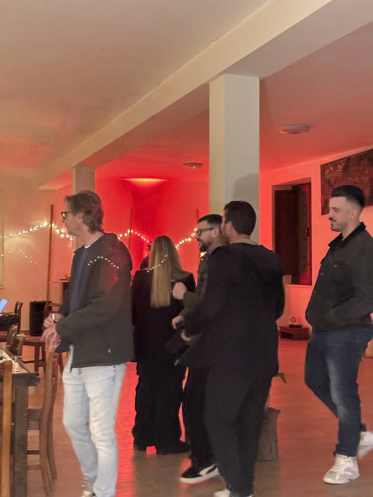
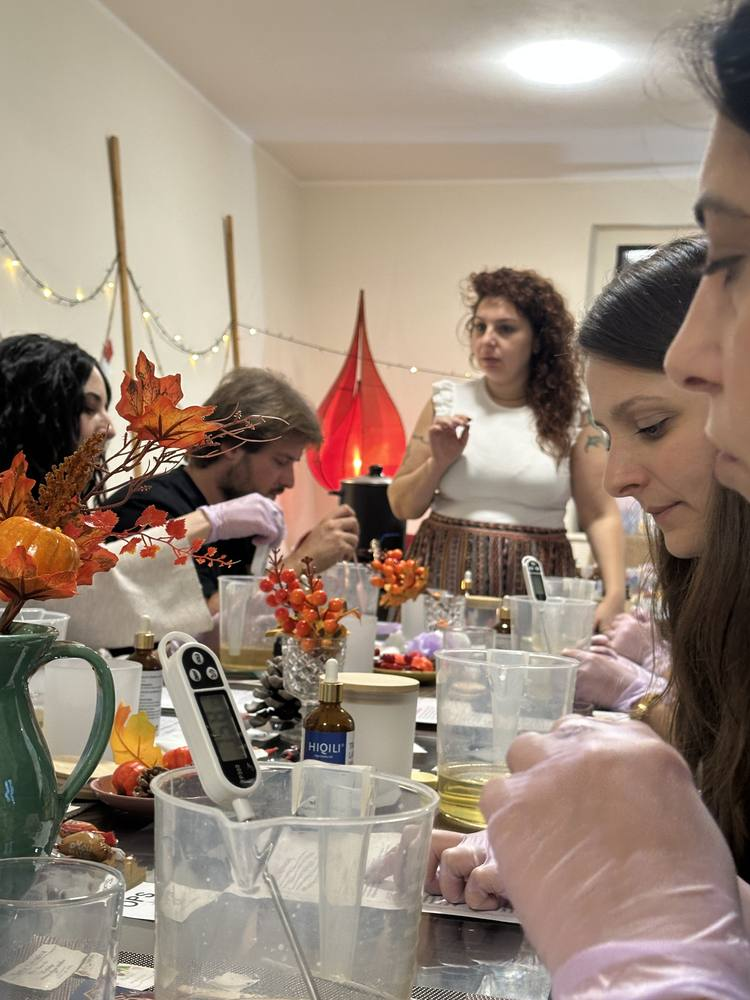
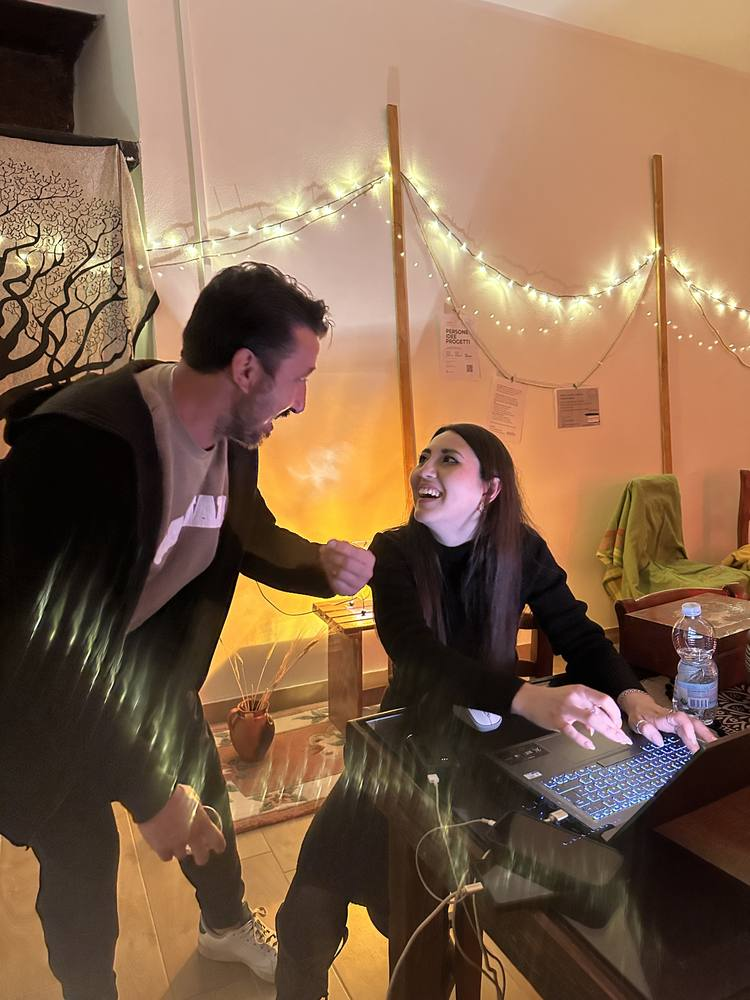
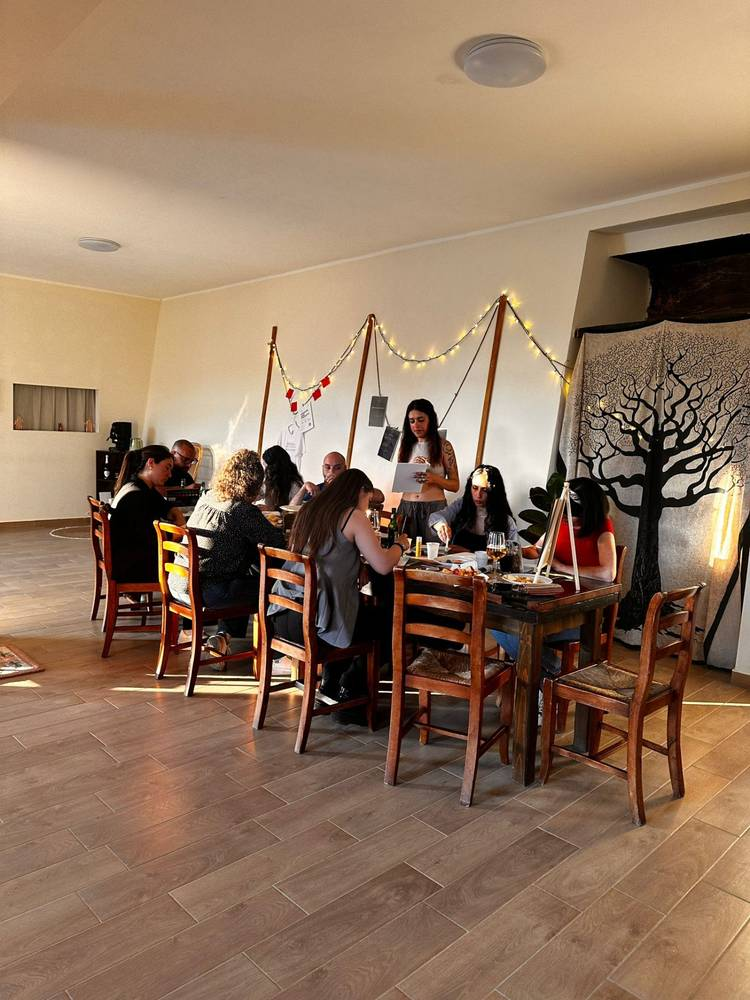
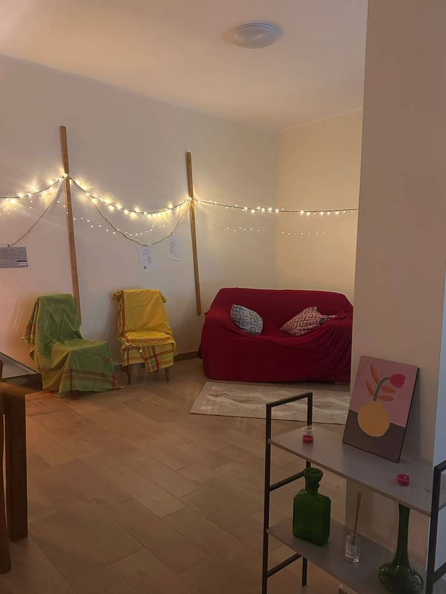
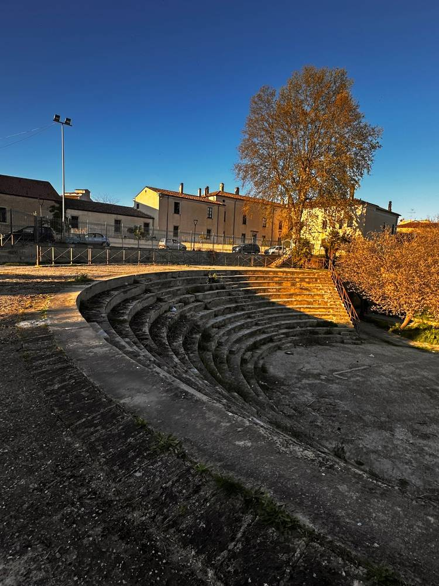

Iscriviti a una data
Scegli un appuntamento nel calendario e mandaci la richiesta su WhatsApp. Ti confermiamo noi il posto.
Calendario →ASSOCIAZIONE DI PROMOZIONE SOCIALE, ISOLA DI CAPO RIZZUTO
Kalyta è nata da un gruppo di cittadini di Isola di Capo Rizzuto. Organizziamo laboratori creativi, serate e incontri a STANZA, il nostro spazio in via degli Apostoli 16.
Le prossime date ↓I LABORATORI
Ogni laboratorio è seguito da chi conosce il mestiere. Si lavora insieme allo stesso tavolo, con i materiali già pronti, e alla fine si torna a casa con quello che si è fatto.

Tele, colori e pennelli sono già sul tavolo. Si parte da un tema e si dipinge con calma, senza bisogno di basi. Il quadro lo porti a casa.
Si lavora con le macchine da cucire su un progetto semplice, come una tote bag. Chi non le ha mai usate impara lì, un passaggio alla volta.


Cera, stoppini, essenze e decorazioni. Si segue il processo dall'inizio alla fine e si esce con la propria candela, ancora tiepida.
LE SERATE

La sera STANZA si riempie in un altro modo. Nei Cerchi di Kalyta ci si siede in cerchio con chi vive qui e si parla del territorio: cosa manca, cosa funziona, cosa si può fare insieme.



CALENDARIO
Apri una data per leggere come funziona, il contributo e come iscriverti.
LO SPAZIO
La nostra sede per laboratori e serate, in via degli Apostoli 16 a Isola di Capo Rizzuto. C'è un tavolo lungo dove si lavora in tanti, un angolo con il divano e le luci appese sopra tutto. Come arrivare →



COME PARTECIPARE
Scegli un appuntamento nel calendario e mandaci la richiesta su WhatsApp. Ti confermiamo noi il posto.
Calendario →Organizziamo un laboratorio solo per voi, anche in un giorno che non è in calendario.
Kalyta Private →Se hai un mestiere da insegnare, un'attività o un'idea per il territorio, scrivici e ne parliamo.
Scrivici →CONTATTI
STANZA
Via degli Apostoli 16, Isola di Capo Rizzuto (KR)
Apri in Google Maps
Per informazioni e iscrizioni scrivici su WhatsApp o per email.
